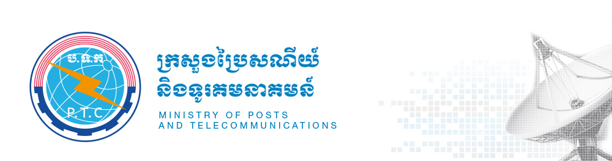
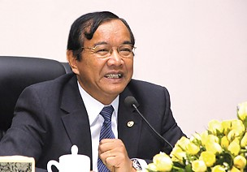
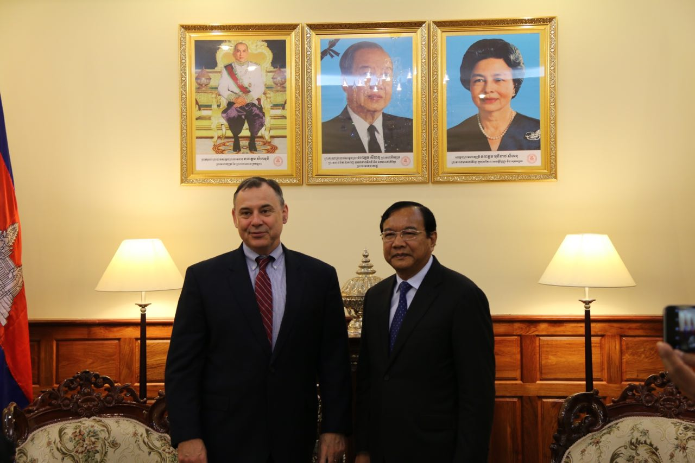
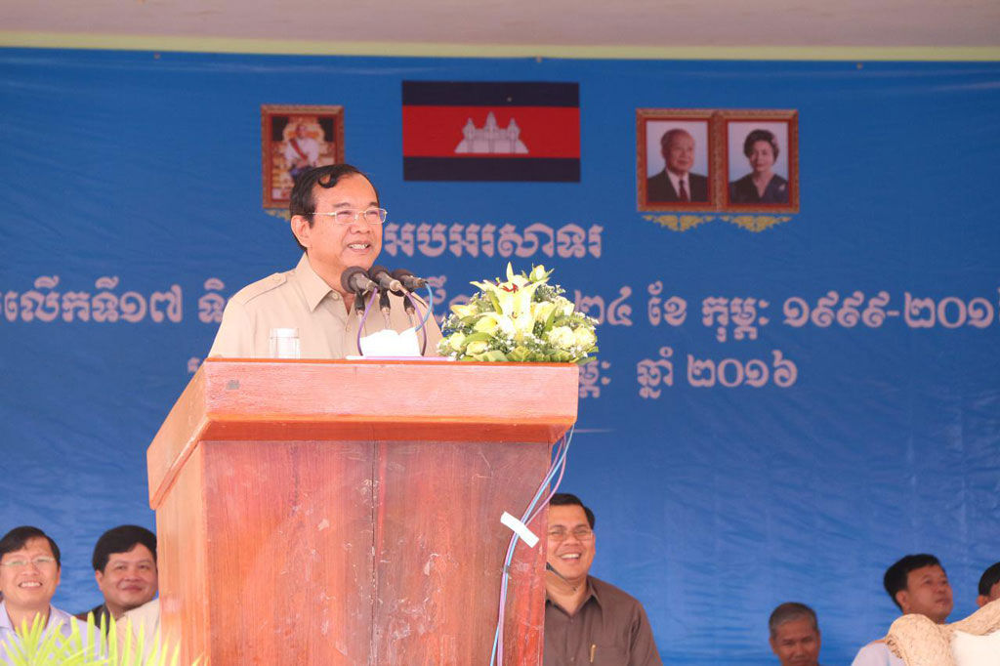

Ministry News
- H.E. Prak Channoy, Secretary of State of MPTC Chaired a Preparatory Meeting for the 105th Anniversary of the International Women’s Day 2016.
- February 26, 2016
- Ministry of Posts and Telecommunications in Cooperation with the Internet Corporation for Assigned Names and Numbers (ICANN) Conducted the Second Workshop on Khmer Script Root Zone LGR.
- February 26, 2016
- A Consultation Meeting with Private Sectors on the Draft of Sub-Decree on Organization and Function of Telecommunication Regulator of Cambodia.
- February 26, 2016
Announcements
- Announcement for Australia Awards Cambodia and New Zealand ASEAN Scholarship Awards, Master’s Degree and Ph.D. Academic Year 2017.
- February 26, 2016
- Clarification of H.E. Minister Prak Sokhonn on Replacement of Board of Directors’ (BoD) Chairman and Director General of Telecom Cambodia
- February 26, 2016
- Announcement: H.E. Minister Prak Sokhonn Led Cambodian Delegates to Attend the Mobile World Congress “GSMA’s Ministerial Program” in Barcelona, Spain
- February 26, 2016

-
- November 4, 2015
-
- November 4, 2015
-
- November 4, 2015
-
- November 4, 2015
-
- November 4, 2015
-
- November 4, 2015
Photo Gallery

A Courtesy Call on H.E. Minister Prak Sokhonn by H.E. William (Bill) A. Heidt, Newly United States Ambassador to Cambodia , January 27, 2016.
Video Gallery

Preah Vihear, February 15, 2016: H.E. Prak Sokhonn, Minister of Posts and Telecommunications and First Vice President of Cambodian Mine Action and Victim Assistance Authority Presided over the 17th Anniversary of National Mine Awareness Day (February 24 1999-2016).
Provincial Activities
- Ratanakiri Office
- February 26, 2016
- Prey Veng Office
- February 26, 2016
- Kampong Chhnang Office
- February 26, 2016
- Tbong Khmum Office
- February 26, 2016
New Technology
- Bryan Cassady is a professor, researcher and innovation consultant. He is writing a book entitled How to innovate like a successful start-up. Cassady is collaborating with strategia group on how to bring these systems to the postal industry
- February 26, 2016
- SingPost releases performance figures for first half of FY2015/16
- February 26, 2016
- Australia Post to invest US$14m in emerging e-commerce businesses
- February 26, 2016
Contact Spokesperson
- H.E MEAS PO
- 012876087
- H.E CHAY NAVUTH
- 017285007
- H.E KHOV MAKARA
- 077213238
- H.E HUN SAROEUN
- 081387868
Autonomous Units
Cambodia Post
Telecommunication Regulator Of Cambodia
Telecom Cambodia